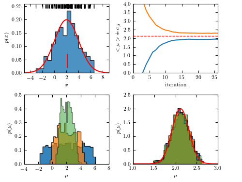

Approximate Bayesian Computation for Gaussian location parameter¶
Figure 5.29 An example of Approximate Bayesian Computation: estimate the location parameter for a sample drawn from Gaussian distribution with known scale parameter.
{kind=link}
iteration: 1
iteration: 2
iteration: 3
iteration: 4
iteration: 5
iteration: 6
iteration: 7
iteration: 8
iteration: 9
iteration: 10
iteration: 11
iteration: 12
iteration: 13
iteration: 14
iteration: 15
iteration: 16
iteration: 17
iteration: 18
iteration: 19
iteration: 20
iteration: 21
iteration: 22
iteration: 23
iteration: 24
iteration: 25
# Author: Zeljko Ivezic
# License: BSD
# The figure produced by this code is published in the textbook
# "Statistics, Data Mining, and Machine Learning in Astronomy" (2019)
# For more information, see http://astroML.github.com
# To report a bug or issue, use the following forum:
# https://groups.google.com/forum/#!forum/astroml-general
import numpy as np
from matplotlib import pyplot as plt
from scipy.stats import norm
#----------------------------------------------------------------------
# This function adjusts matplotlib settings for a uniform feel in the textbook.
# Note that with usetex=True, fonts are rendered with LaTeX. This may
# result in an error if LaTeX is not installed on your system. In that case,
# you can set usetex to False.
from astroML.plotting import setup_text_plots
setup_text_plots(fontsize=8, usetex=True)
def plotABC(theta, weights, Niter, data, muTrue, sigTrue):
Nresample = 100000
Ndata = np.size(data)
xmean = np.mean(data)
sigPosterior = sigTrue / np.sqrt(Ndata)
truedist = norm(xmean, sigPosterior)
x = np.linspace(-10, 10, 1000)
for j in range(0, Niter):
meanT[j] = np.mean(theta[j])
stdT[j] = np.std(theta[j])
# plot
fig = plt.figure(figsize=(5, 3.75))
fig.subplots_adjust(left=0.1, right=0.95, wspace=0.24,
bottom=0.1, top=0.95)
# last few iterations
ax1 = fig.add_axes((0.55, 0.1, 0.35, 0.38))
ax1.set_xlabel(r'$\mu$')
ax1.set_ylabel(r'$p(\mu)$')
ax1.set_xlim(1.0, 3.0)
ax1.set_ylim(0, 2.5)
for j in [15, 20, 25]:
sample = weightedResample(theta[j], Nresample, weights[j])
ax1.hist(sample, 20, density=True, histtype='stepfilled',
alpha=0.9-(0.04*(j-15)))
ax1.plot(x, truedist.pdf(x), 'r')
# first few iterations
ax2 = fig.add_axes((0.1, 0.1, 0.35, 0.38))
ax2.set_xlabel(r'$\mu$')
ax2.set_ylabel(r'$p(\mu)$')
ax2.set_xlim(-4.0, 8.0)
ax2.set_ylim(0, 0.5)
for j in [2, 4, 6]:
sample = weightedResample(theta[j], Nresample, weights[j])
ax2.hist(sample, 20, density=True, histtype='stepfilled',
alpha=(0.9-0.1*(j-2)))
# mean and scatter vs. iteration number
ax3 = fig.add_axes((0.55, 0.60, 0.35, 0.38))
ax3.set_xlabel('iteration')
ax3.set_ylabel(r'$<\mu> \pm \, \sigma_\mu$')
ax3.set_xlim(0, Niter)
ax3.set_ylim(0, 4)
iter = np.linspace(1, Niter, Niter)
meanTm = meanT - stdT
meanTp = meanT + stdT
ax3.plot(iter, meanTm)
ax3.plot(iter, meanTp)
ax3.plot([0, Niter], [xmean, xmean], ls="--", c="r", lw=1)
# data
ax4 = fig.add_axes((0.1, 0.60, 0.35, 0.38))
ax4.set_xlabel(r'$x$')
ax4.set_ylabel(r'$p(x)$')
ax4.set_xlim(-5, 9)
ax4.set_ylim(0, 0.26)
ax4.hist(data, 15, density=True, histtype='stepfilled', alpha=0.8)
datadist = norm(muTrue, sigTrue)
ax4.plot(x, datadist.pdf(x), 'r')
ax4.plot([xmean, xmean], [0.02, 0.07], c='r')
ax4.plot(data, 0.25 * np.ones(len(data)), '|k')
plt.show()
#----------------------------------------------------------------------
def distance(x, y):
return np.abs(np.mean(x) - np.mean(y))
def weightedResample(x, N, weights):
# resample N elements from x, with selection prob. proportional to weights
p = weights / np.sum(weights)
return np.random.choice(x, size=N, replace=True, p=p)
# return the kernel values
def kernelValues(prevThetas, prevStdDev, currentTheta):
return norm(currentTheta, prevStdDev).pdf(prevThetas)
# return new values, scattered around an old value using kernel
def kernelSample(theta, stdDev, Nsample=1):
return np.random.normal(theta, stdDev, Nsample)
# compute new weight
def computeWeight(prevWeights, prevThetas, prevStdDev, currentTheta):
denom = prevWeights * kernelValues(prevThetas, prevStdDev, currentTheta)
return prior(currentTheta, prevThetas) / np.sum(denom)
# flat prior probability
def prior(thisTheta, allThetas):
return 1.0 / np.size(allThetas)
def getData(Ndata, mu, sigma):
# use simulated data
return simulateData(Ndata, mu, sigma)
def simulateData(Ndata, mu, sigma):
# simple gaussian toy model
return np.random.normal(mu, sigma, Ndata)
def KLscatter(x, w, N):
sample = weightedResample(x, N, w)
return np.sqrt(2) * np.std(sample)
#----------------------------------------------------------------------
np.random.seed(0) # for repeatability
# "observed" data:
Ndata = 100
muTrue = 2.0
sigmaTrue = 2.0
data = getData(Ndata, muTrue, sigmaTrue)
dataMean = np.mean(data)
# conservative choice for initial tolerance
eps0 = np.max(data) - np.min(data)
# limits for uniform prior
thetaMin = -10
thetaMax = 10
# sampling parameters
Ndraw = 1000
Niter = 26
DpercCut = 80
theta = np.empty([Niter, Ndraw])
weights = np.empty([Niter, Ndraw])
D = np.empty([Niter, Ndraw])
eps = np.empty([Niter])
meanT = np.zeros(Niter)
stdT = np.zeros(Niter)
# first sample from uniform prior, draw samples and compute their distance to data
for i in range(0, Ndraw):
thetaS = np.random.uniform(thetaMin, thetaMax)
sample = simulateData(Ndata, thetaS, sigmaTrue)
D[0][i] = distance(data, sample)
theta[0][i] = thetaS
weights[0] = 1.0 / Ndraw
scatter = KLscatter(theta[0], weights[0], Ndraw)
eps[0] = np.percentile(D[0], 50)
# ABC iterations:
ssTot = 0
verbose = False
for j in range(1, Niter):
print('iteration:', j)
thetaOld = theta
weightsOld = weights / np.sum(weights)
# sample until distance condition fullfilled
ss = 0
for i in range(0, Ndraw):
notdone = True
while notdone:
ss += 1
ssTot += 1
# sample from previous theta with probability given by weights: thetaS
thetaS = weightedResample(theta[j-1], 1, weights[j-1])[0]
# perturb thetaS with kernel
thetaSS = kernelSample(thetaS, scatter)[0]
# generate a simulated sample
sample = simulateData(Ndata, thetaSS, sigmaTrue)
dist = distance(data, sample)
if (dist < eps[j-1]):
notdone = False
D[j][i] = dist
theta[j][i] = thetaSS
# get weight for new theta
weights[j][i] = computeWeight(weights[j-1], theta[j-1], scatter, thetaSS)
# new kernel scatter value
scatter = KLscatter(theta[j], weights[j], Ndraw)
eps[j] = np.percentile(D[j], DpercCut)
if (verbose):
print(' acceptance rate (%):', (100.0*Ndraw/ss))
print(' new epsilon:', eps[j])
print(' sample scatter:', scatter)
if (verbose):
print('number of simulation evaluations:', ssTot)
# plot
plotABC(theta, weights, Niter, data, muTrue, sigmaTrue)